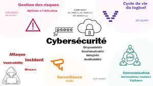

Le développeur dans le domaine de la cybersécurité travaille sur des programmes, logiciels et applications afin que ceux-ci disposent du moins de failles possibles. Ce spécialiste de la cyberdéfense intervient en amont de la conception des logiciels pour empêcher les risques d'attaques provenant de hackers.
Comme pour de nombreux métiers de la cybersécurité, le poste de développeur en cybersécurité nécessite la détention d'une formation de niveau Bac+3 à Bac+5. Niveau Bac+3 : Licence en informatique.
|  |